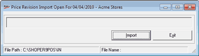

When you have a POS installation which is a part of a business chain and the Head Office (HO) makes a price revision which is usually automated as per the schedule set at HO. In case you wish to update the price revision out of the set schedule, at the POS location you can run this option.
The process explained is for manual loading of Price Revision. Auto loading is performed through a synch process defined at HO for the POS as per a schedule.
How to reach: Housekeeping > Data Import > Price Revision
The Price Revision Import window is as shown.

The price master file imported into POS Primary DB is of the format SHPR_xxx_scc_nnnnnn.txt and should be present in the Shoper-In folder.
The details of the file components are:
SHPR: Enables you to identify the file type as Primary/ Secondary,
xxx: Shoper company code of the source of price master, i.e., file source/ Head Office,
scc: Your Shoper Company code/ destination, i.e., POS/ Distributor,
6 digit number: Sequence number,
.txt: File extension
File Name Validation
The Item Master is validated before import into its Primary DB. The System
checks for the correctness of the POS Company code in the file name as well as its contents before import.
checks for the sequence number of the file being imported. The system will not import files of lower sequence numbers. In other words the sequence numbers of the files being imported should be increasing progressively.
If there is any change in the item master’s file name and its contents, the system will abort the import of item masters.
The Price Revision file is deleted after import into POS Primary DB. If an error is detected during import, the file is renamed as Error <file name> and the error file details are recorded in a Log file.
POS Activity Log
This contains details of all imports and specific action such as backup, restore, etc. carried out in the POS Company.
Factors for effecting price revisions
Price revisions of items are made on the basis of three factors, Retail Price, Dealer Price and Effective Date.
Price variations, up/down or fixed is either on an amount or percentage basis on Retail or Dealer Price.
The Effective Date is the date on which the revision takes effect in POS.
The price revision defined is effected during the Day Open option for all those price revisions whose Effective Date is equal to Shoper date.
When the price revision with the Effective Date lesser than the Shoper date is received at POS, it gets affected as part of the Data Sync./ Loading. But the revised price will be applicable only for transactions to be performed after price revision and the transaction done before will carry the old price.